<!DOCTYPE html>
<html lang="pt-BR">
<head> 
<link rel="preconnect" href="https://fonts.googleapis.com">
<link rel="preconnect" href="https://fonts.gstatic.com" crossorigin>
<link href="https://fonts.googleapis.com/css2?family=Playwrite+HU:wght@100..400&display=swap" rel="stylesheet">
  <link rel="icon" href="imagens/icone.png" type="image/x-icon">
 <meta charset="UTF-8" />
  <meta name="viewport" content="width=device-width, initial-scale=1.0" />
  <link rel="stylesheet" href="style2.css" />
  <title>Conheça Jequié - BA</title>
</head>

<body>

  <header>
   <h1><span class="titulo-preto">Jequié</span> - <span class="titulo-preto">Suncity</span></h1>
    
  </header>

  <nav>
    <a onclick="mostrarSecao('inicio')">Início</a>
    <a onclick="mostrarSecao('historia')">História</a>
    <a onclick="mostrarSecao('turismo')">Hospedagem</a>
    <a onclick="mostrarSecao('cultura')">Pontos Turísticos</a>
    <a onclick="mostrarSecao('prefeito')">Prefeito Atual</a>
    <a onclick="mostrarSecao('empresas')">Empresas Importantes</a>
    <a onclick="mostrarSecao('feedback')">Feedback</a>
	<a onclick="mostrarSecao('contato')">Contato</a>
  </nav>

  <div class="container">
    <div id="inicio" class="secao ativa">
      <h1>Cidade Sol</h1>
      <p>Jequié, conhecida como a "Cidade Sol", está localizada no sudoeste da Bahia, a cerca de 365 km de Salvador. Com população estimada em 156 mil habitantes, destaca-se pelo clima quente e seco, típico do semiárido, e por sua posição estratégica como entroncamento rodoviário importante na região.</p>
      
    </div>

    <div id="historia" class="secao">
      <h1>História de Jequié</h1>
      <p> Conhecida como a "Cidade Sol", Jequié encanta não só pelo clima quente e acolhedor, mas também por sua história rica e cheia de personalidade.</p>

 <p> Fundada oficialmente em 1910, a cidade nasceu às margens do Rio das Contas, em uma região antes habitada por povos indígenas. O nome “Jequié” vem do tupi e faz referência a uma armadilha de pesca — um elo com suas origens naturais e ribeirinhas.</p>

 <p> O grande salto veio com a chegada da ferrovia no início do século XX, que transformou Jequié em um centro comercial dinâmico e atraiu novas culturas e influências.</p>
 <p> Desde os tempos de fazendas e tropeiros até se tornar polo regional em educação, saúde e comércio, Jequié soube crescer sem perder suas raízes. </p>
	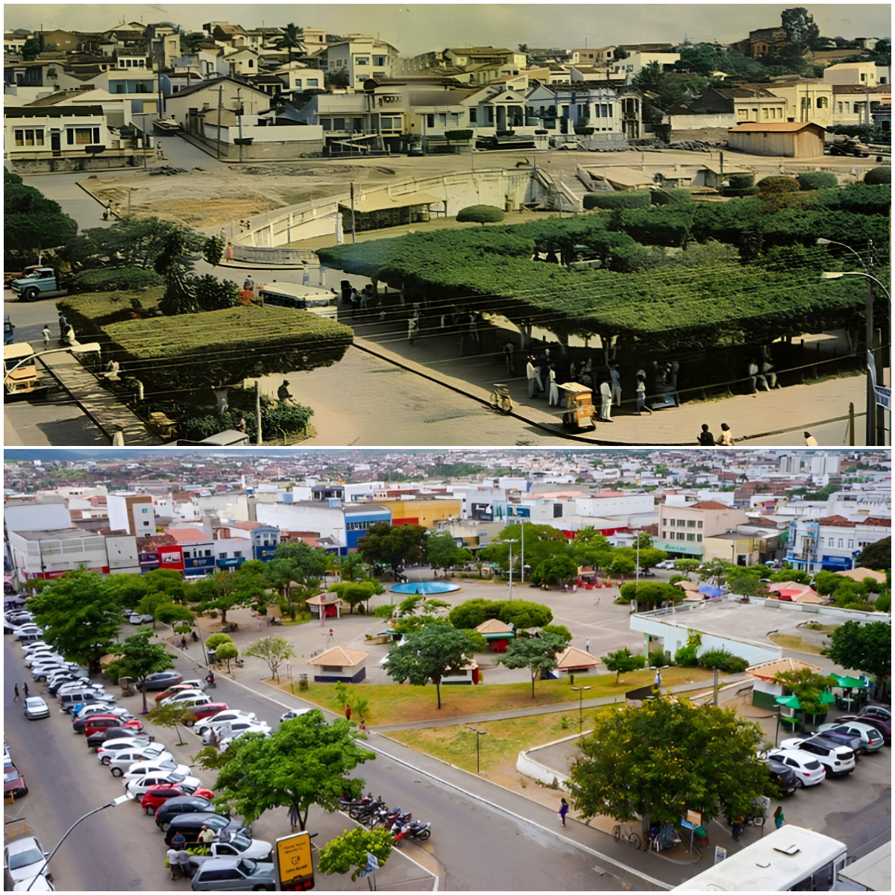<br><br> <h5> Praça Rui Barbosa - Antes e depois </h5>
	</div>

    <div id="turismo" class="secao">
      <h3>Melhores Hotéis em Jequié</h3>
      <p>Se você está planejando sua estadia em Jequié, eis aqui algumas opções:</p>
      <ul>
	 
        <li><strong>Hotel Granterrara</strong> - Localizado no centro de Jequié, em frente à rodoviária, o Hotel Granterrara é a escolha ideal para quem busca conforto, praticidade e uma estadia de alto padrão.<a href="https://maps.app.goo.gl/GHgX61ybaqUxifAn9"target="_blank"> Endereço: Av.Rio Branco, nº1550, Centro. </a> </li>
        <p> (73) 3528-9250 | 📧 adm@granterrara.com.br</p>
		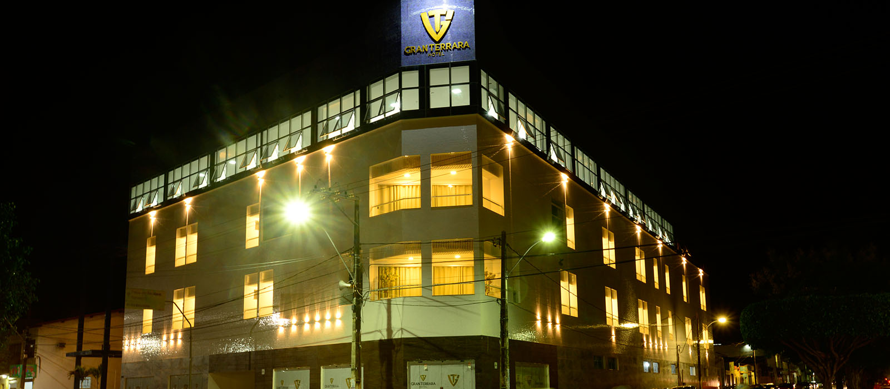<br><br>
        <li><strong>Hotel Rio Branco</strong> - É uma excelente opção para quem busca uma estadia confortável e bem localizada em Jequié, Bahia. O hotel oferece fácil acesso a pontos turísticos, restaurantes e comércio local.<a href="https://maps.app.goo.gl/Mco2EboEK8aqnejJ6"target="_blank"> Endereço: Avenida Rio Branco, nº 939 – Centro. </a> </li>
       <p> (73) 3525-9222 / (73) 3525-0023 | 📧 hotelriobranco.blogspot.com </p>
	   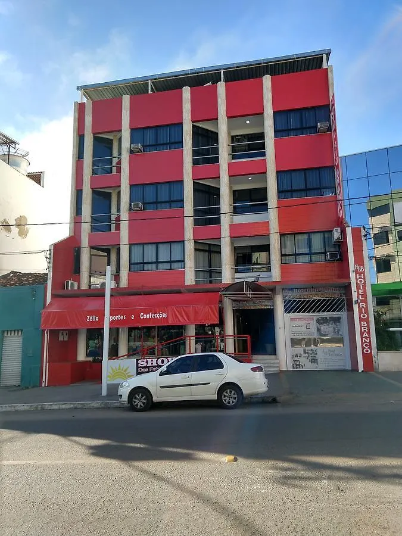<br><br>
        <li><strong>Master Hotel</strong> - É uma das principais opções de hospedagem na cidade, oferecendo uma experiência completa para quem visita o sudoeste baiano. O hotel combina conforto, lazer e uma estrutura moderna, sendo ideal para turistas e viajantes a negócios.
<a href="https://maps.app.goo.gl/g3bVqG4rXznshMiD8"target="_blank"> Endereço: Av. Lomanto Junior, nº 1129, Joaquim Romão </a> </li>
<p> (73) 3526-6388 / (73) 3527-3992  | 📧 hotelmasterjequie@gmail.com
        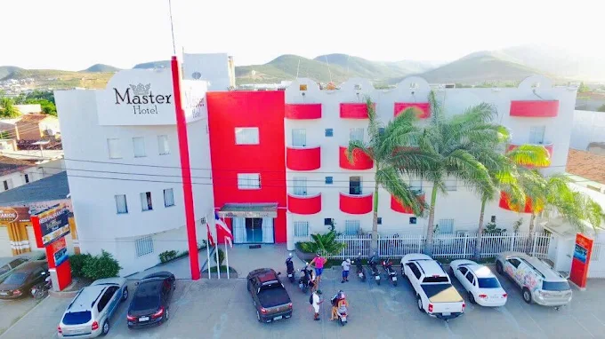<br><br>
        <li><strong>Germano's Hotel</strong> - É uma opção acolhedora e bem localizada para quem visita Jequié, na Bahia. O hotel oferece fácil acesso às principais atrações da cidade, como a Catedral de Santo Antônio de Pádua e a Praça Rui Barbosa. <a href="https://maps.app.goo.gl/eh2gDnTV8bhp6j9K6"target="_blank"> Endereço: Rua Frederico Costa, nº 10, Centro. </a> </li>
       <p> (73) 3525-6211 | 📧 germanos.hotels-brazil.net </p>
	   <br><br>
      </ul>
    </div>

    <div id="cultura" class="secao">
      <h1>Pontos Turísticos</h1>
      <ul>
        <h2>Barragem de Pedra</h2>
        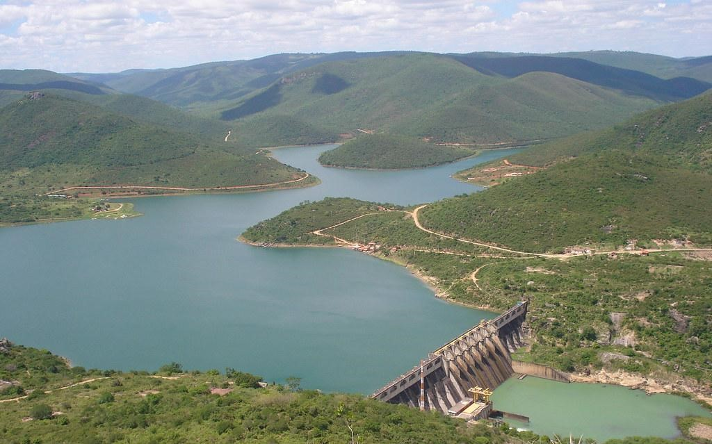
		<p>A Barragem da Pedra, é um dos principais pontos turísticos da cidade, ideal para quem busca lazer e contato com a natureza. Com belas paisagens, como o Mirante da Sereia, oferece vista para o Rio de Contas e a Pedra Santa. É também local de eventos religiosos e tem estrutura revitalizada, tornando-se um ótimo lugar para relaxar, tirar fotos e aproveitar o clima agradável da "Cidade Sol".</p><br><br><br>
        <h2>Pedra Santa</h2>
        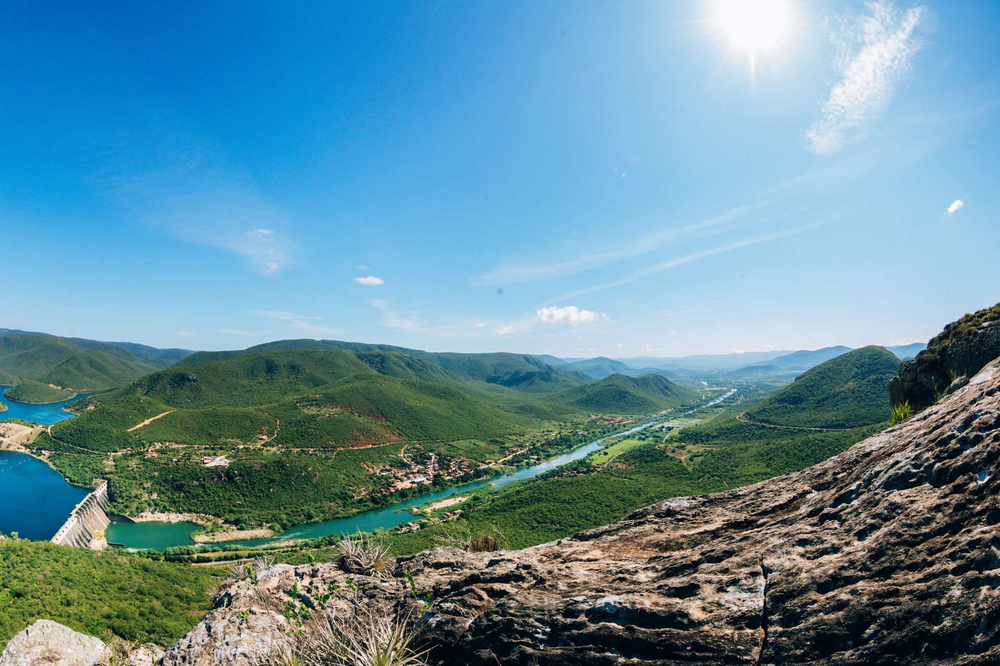
        <p>A trilha da Pedra Santa revela um dos mais belos patrimônios naturais de Jequié. Durante o percurso, os visitantes podem conhecer uma pequena gruta dedicada a São José, um local de devoção religiosa que inspira fé e contemplação. Ao final, a trilha presenteia com vistas incríveis da Barragem da Pedra e das águas represadas do Rio de Contas, tornando a experiência inesquecível e perfeita para admirar a natureza e renovar as energias.</p><br><br><br>
		<h2>Catedral de Santo Antônio</h2>
        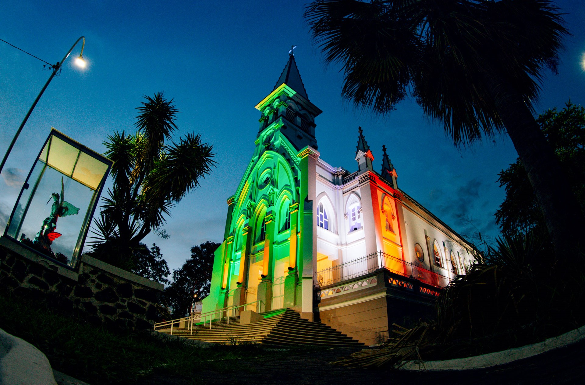
		<p>Com sua imponente arquitetura gótica, a Catedral de Santo Antônio é um dos maiores patrimônios históricos de Jequié. Projetada pelo arquiteto francês André Saffrey e executada pelo engenheiro alemão Carlos Kuenh em 1928, r e vela a identidade de fé do município. A tradicional Festa do Padroeiro, realizada de 1º a 13 de junho, é patrimônio cultural imaterial, preservando e valorizando as tradições religiosas.</P><br><br><br>
        <h2>Mercado Municipal</h2>
        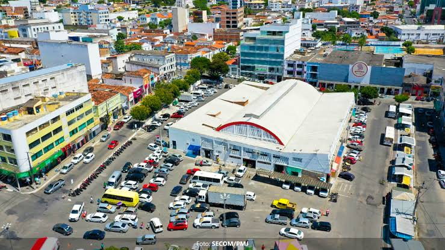
		<p>O Mercado Municipal de Jequié, inaugurado em 1954, é um dos principais centros comerciais e culturais da cidade. Localizado na Praça da Bandeira, passou por revitalizações e hoje funciona também como um espaço de apoio ao empreendedorismo. Além de movimentar o comércio local, preserva a tradição, a história e a gastronomia típica da região.</p>


      </ul>
    </div>

    <div id="contato" class="secao">
      <h2>Contato</h2>
      <p><strong>Email:</strong> projetosuncity@gmail.com</p>
      <p><strong>Instagram:</strong> @suncity889</p>
      </div>
    </div>

    <div id="prefeito" class="secao">
      <h2>Prefeito Atual de Jequié</h2>
	  <p><strong>Nome:</strong> Zenildo Brandão Santana (Zé Cocá)</p>
      <p><strong>Partido:</strong> Progressistas (PP)</p>
      <p><strong>Mandato:</strong> 2025–2028</p>
      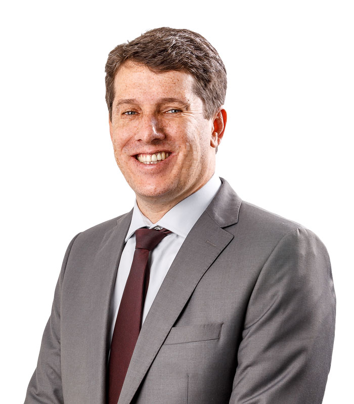<br><br>
	  <p><strong>Biografia:</strong> Zenildo Brandão Santana é natural de Itiruçu-BA, na microrregião do vale do Jiquiriça. Aos 9 anos de idade sua família se mudou para Jequié. Com a morte prematura do seu Pai, teve que conciliar os estudos com o trabalho na roça da sua família na cidade de Lafaiete Coutinho.

A sua vida de homem do campo forte e produtiva chamou a atenção do prefeito Dermival que logo o convidou para ser Secretário de Desenvolvimento e depois Chefe de Gabinete. Em 2008 foi eleito Prefeito de Lafaiete e a sua administração inovadora e eficiente conquistou 95% de aprovação popular tornando-o candidato único na sua reeleição ao cargo de prefeito de Lafaiete Coutinho em 2012.

Durante os 8 anos à frente da prefeitura, Zé Cocá transformou a vida dos lafaietenses. A infraestrutura, agricultura e saúde da cidade nunca receberam tanto investimento na história, além do 1º lugar na qualidade da educação da Bahia, segundo a FIRJAN. E durante os 8 anos de mandato teve todas suas contas as aprovadas pelo TCM.

Zé Cocá ganhou elogios públicos do governador Rui Costa como um exemplo de gestão para as prefeitos da Bahia e o convidou para fazer parte da sua equipe, nomeando Coordenador dos Consórcios da Bahia.

Em 2018, Zé Cocá foi eleito Deputado Estadual pelo Progressista com uma votação expressiva em Jequié e na maioria dos municípios do Vale do Jiriquiçá e Médio Rio das Contas.

Em 2020, com mais de 30 mil votos, Zé Cocá foi eleito prefeito de Jequié.</p>
      <div style="text-align: center;">
       
         
		
        </a>
      </div>
    </div>

    <div id="empresas" class="secao">
      <h2>Empresas Importantes de Jequié</h2>
      <ul>
        <li><strong>Ramarim</strong></li>
		<p>É uma das maiores indústrias calçadistas do Brasil, com duas unidades em Jequié, Bahia. Fundada em 1962, a empresa é reconhecida por suas marcas Ramarim e Comfortflex, que se destacam pela qualidade, conforto e inovação .Em Jequié, a Ramarim emprega diretamente cerca de 4 mil pessoas e possui capacidade para produzir mais de 60 mil pares de calçados por dia . A empresa também se destaca por suas práticas sustentáveis, utilizando 100% de borracha, espuma e EVA reciclados em sua produção, além de adotar energia limpa e práticas de economia de água.<a href="https://maps.app.goo.gl/BAiMNEFL7aYjSUHaA"target="_blank">clique aqui</a></p>
        <p> (73) 3047-8600 | 📧 belotto@ramarim.com.br </p>
		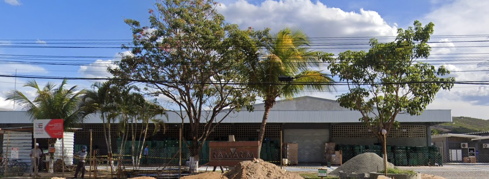<br><br><br>
		<li><strong>Frijel</strong></li>
		<p>É uma empresa baiana fundada em 9 de março de 1982, especializada na distribuição de carnes, aves, peixes, laticínios e outros produtos alimentícios. Com sede no Distrito Industrial de Jequié, a empresa se destaca pela infraestrutura moderna e pelo compromisso com a qualidade e pontualidade na entrega.<a href="https://maps.app.goo.gl/659R4gz2K9g8q5Ay8"target="_blank">clique aqui</a> </p>
        <p> (73) 3526-8500 | 📧 frijel@frijel.com.br </p>
		<br><br><br>
		<li><strong>Gameleira</strong></li>
		<P>É uma tradicional indústria baiana fundada na década de 1960 por Zezinho e Dona Nenê, inicialmente como uma panificadora. Com o tempo, a empresa se expandiu e, em 1986, inaugurou a Fábrica de Produtos Alimentícios Gameleira Ltda, localizada no Distrito Industrial de Jequié. A partir de então, passou a produzir e comercializar uma variedade de produtos alimentícios, incluindo biscoitos, massas e derivados de milho, conquistando o paladar dos consumidores em diversas regiões do Brasil.<a href="https://maps.app.goo.gl/PKchv8MrcvcLUC7w5"target="_blank">clique aqui</a></p>
        <p> (73) 3527-8200 | 📧 contabil.gameleira@hotmail.com </p>
		<br><br><br>
		<li><strong>Petyan</strong></li>
		<p>É uma destacada empresa baiana especializada na produção de biscoitos e massas, com sede em Jequié, Bahia. Fundada em 12 de agosto de 1986, a Petyan iniciou suas atividades em uma panificadora familiar, onde produzia biscoitos de forma artesanal. Devido à crescente demanda, a empresa estabeleceu uma unidade industrial dedicada à fabricação de biscoitos, consolidando-se ao longo dos anos como líder no setor .<a href="https://maps.app.goo.gl/JuqHjSbARifGVtFT8"target="_blank">clique aqui</a></p>
        <p> (73) 3525-5511 | 📧 falecom@petyan.com.br </p>
		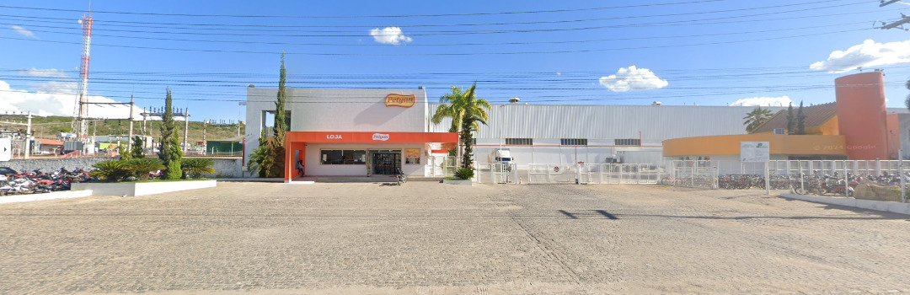<br><br><br>
		<li><strong>Atakarejo</strong></li>
		<p>É uma unidade da rede Atakarejo, inaugurada em 23 de novembro de 2023. Esta loja representa um marco na expansão da rede no interior do estado, oferecendo aos consumidores da região acesso a uma ampla variedade de produtos com preços competitivos.<a href="https://maps.app.goo.gl/Ghy2B8YWzRX7FobF6"target="_blank">clique aqui</a></P>
		<p> (73) 98172-6011 | 📧 fiscal@atakarejo.com.br </p>
		<br><br><br>
      </ul>
      <div style="text-align: center;">

       </a>
      </div>
    </div>

    <div id="feedback" class="secao">
      <h2>Envie seu Feedback</h2>
      <form action="mailto:contato@jequie.tur.br" method="post" enctype="text/plain">
        <div>
          <label for="nome">Nome:</label>
          <input type="text" id="nome" name="nome" required />
        </div>
        <div>
          <label for="email">E-mail:</label>
          <input type="email" id="email" name="email" required />
        </div>
        <div>
          <label for="mensagem">Mensagem:</label>
          <textarea id="mensagem" name="mensagem" rows="4" required></textarea>
        </div>
        <button type="submit">Enviar</button>
      </form>
    </div>

  </div>

  <footer>
    &copy; 2025 Conheça Jequié. Todos os direitos reservados.
  </footer>

  <script>
    function mostrarSecao(id) {
      const secoes = document.querySelectorAll('.secao');
      secoes.forEach(secao => secao.classList.remove('ativa'));
      document.getElementById(id).classList.add('ativa');
    }
  </script>

</body>
</html>
